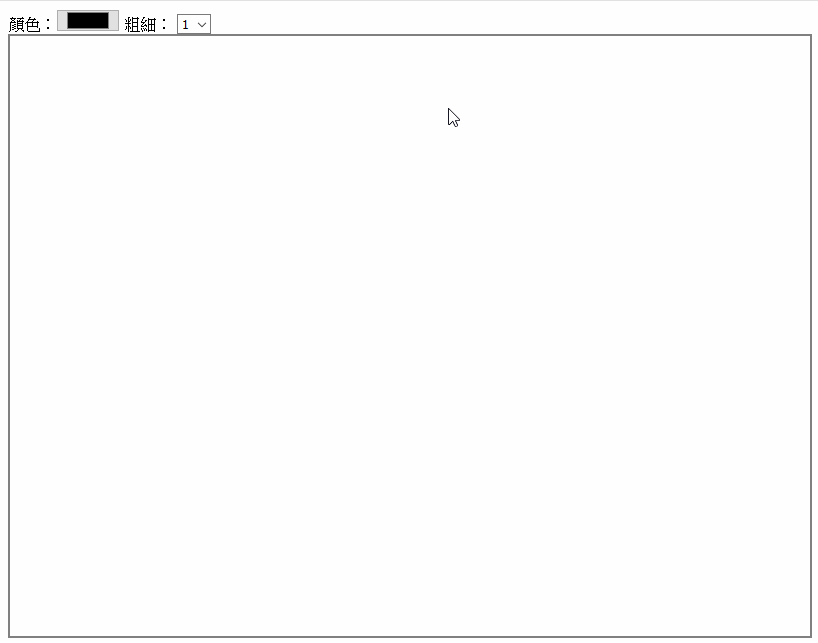

[鐵人賽Day12] 實作一個共用塗鴉牆 (1) - 前端塗鴉板製作
文章目錄
今天我們來實作一個共用塗鴉牆，其實之前看到Canvas的應用一直想玩玩看，但是一直都沒時間玩，剛好這次SignalR實作可以用到!XD 這次實作拆成2部分，一部分是塗鴉的實作，第二天在做SignalR的部分。
塗鴉牆實作
首先我們先在index.html建立一個Canvas元素，style給個外框，不然搞不清楚範圍在哪！
<canvas id="draw" width="800" height="600" style="border:2px solid gray"></canvas>
建立使用的變數
var canvas = document.getElementById('draw'); // 取得畫布元素
var ctx = canvas.getContext('2d'); // 使用2D繪圖
var draw = false; // 是否要繪圖
var tempPos = [0, 0]; // 繪圖起始位置
畫圖事件
畫圖的流程就是在模擬畫圖的動作，建立3個監聽事件，mousedown代表畫筆畫下去，mousemove代表畫筆移動，mouseup畫筆拿起來(停止繪圖的意思)，建立一個draw變數就是用來來偵測畫筆是否再紙上。
canvas.addEventListener('mousedown', function(e){
draw = true;
});
canvas.addEventListener('mousemove', function(e){
if(draw){
}
});
canvas.addEventListener('mouseup', function(){
draw = false;
});
mousedown開始時，我們要把開始的位置用nowPos記錄下來
canvas.addEventListener('mousedown', function(e){
draw = true;
tempPos = [e.pageX - canvas.offsetLeft, e.pageY - canvas.offsetTop];
});
mousemove發現draw為true，代表畫筆在紙上，所以就開始繪畫
canvas.addEventListener('mousemove', function(e){
if(draw){
var newPos = [e.pageX - canvas.offsetLeft, e.pageY - canvas.offsetTop]; // 取得結束的位置
ctx.beginPath(); // 開始繪畫取得路徑
ctx.moveTo(tempPos[0], tempPos[1]); // 移動到起始位置
ctx.lineTo(newPos[0], newPos[1]); // 畫線到結束的位置
ctx.closePath(); // 關閉繪畫的路徑
ctx.stroke(); // 畫線
tempPos = newPos; // 記錄下最後的位置為目前的位置
}
});
畫筆設定
只有這樣感覺好像太單調，所以我們在加入顏色和線條粗細，在Canvas上面加入2項設定html element
<div>
顏色：<input id="color" type="color">
粗細：
<select id="lineWidth">
<option>1</option>
<option>2</option>
<option>3</option>
<option>4</option>
<option>5</option>
<option>6</option>
<option>7</option>
</select>
</div>
開始畫時讓Canvas載入選擇的設定，strokeStyle為畫筆顏色，lineWidth為線條粗細。
var color = document.getElementById('color');
var lineWidth = document.getElementById('lineWidth');
ctx.strokeStyle = color.value;
ctx.lineWidth = lineWidth.value;
設定2個設定選項的監聽事件，讓選項改變時讓Canvas從新載入設定
color.addEventListener('input', function(){
ctx.strokeStyle = color.value;
})
lineWidth.addEventListener('input', function(){
ctx.lineWidth = lineWidth.value;
})
DEMO

這樣就成功做成一個簡單的塗鴉牆了，明天再來繼續做剩下的SignalR的部分。